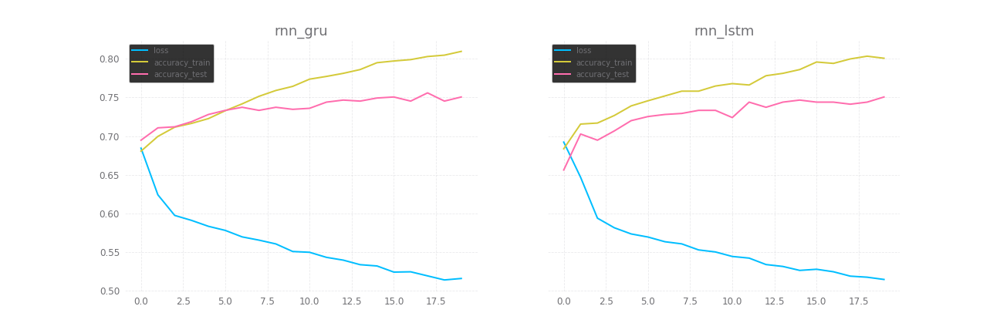

Classificação 3: RNN parte 1
Nota
os códigos estão aqui: https://github.com/demacdolincoln/test-sentiment_analysis
Nste primeiro experimento com redes neurais recorrentes, vamos apenas analisar o efeito da própria recorrência com o LSTM e GRU. Preliminarmente é preciso compreender alguns aspectos:
- O que faremos com o skip-gram treinado pelo Gensim?
- Em quê o LSTM ou o GRU poderão influenciar?
- Se a entrada tem tamanho variável, como internamente fica a rede neural?
Antes de chegar a essas explicações, essa é a classe que contém nossa rede neural:
1. O que faremos com o skip-gram treinado pelo Gensim?
A camada incorporada tem uma dupla função: converter a entrada (array de inteiros e de tamanho variável) em uma matriz de largura fixa, útil à célula que cuidará da recorrência, e aplicar o skip-gram, por isso ela precisa ter as seguintes dimensões [tamanho do vocabulario x dimensões do skip-gram], O que é devolvido por esta camada é uma matriz no formato [quantidade de palavras x dimensões do skip-gram].
self.embed = nn.Embedding(vocab_size, n) self.embed.load_state_dict({ "weight": torch.FloatTensor(model.wv.vectors) })
Outro fator importante que precisa ser mencionado é que esta camada também está sujeita ao treinamento da rede neural, ou seja, mantendo desse modo como está, estamos aplicando uma transferência neural, ou seja utilizando uma rede já treinada (no caso skip-gram) e continuando seu treinamento aplicado a uma outra situação, cujo treinamento neste novo contexto tende a ter um ponto de partida com maior precisão, esta é a idéia por trás da escolha de manter o treinamento ativo nesta camada, fazer com que o conteúdo aprendido no treinamento feito pelo Gensim vá se adaptando ao contexto da análise de sentimento segundo o dataset utilizado.
2. Em quê o LSTM ou o GRU poderão influenciar?
Em sua estrutura, a recorrêncida da RNN se resume a uma camada oculta, uma célula de recorrência que trata do gerenciamento de memória e a entrada, olhando com atenção, a célula fará basicamente é alterar os pesos da entrada de acordo com a camada oculta, que serve como uma memória, indicando o que valorizar ou não na etapa seguinte da execução da rede neural.
Traduzindo para o contexto da entrada conter a posição de cada palavra num hiperplano de acordo com o valor semântico expresso pelo uso demonstrado no dataset, isso quer dizer que será feito mais um ajuste sobre o skip-gram, na prática esse pós processamento vai indicar a importãncia de cada dimensão para cada palavra, potencializando o viés indicado pelo treinamento do skip-gram.
No PyTorch temos GRU e GRUCell, e LSTM e LSTMCell, a diferença é que usando simpelsmente GRU ou LSTM estamos inserindo uma pequena rede neural com a célula indicada no nome, podemos variar a quantidade de camadas lineares e definir uma taca pra o dropout, etc, mas se usarmos GRUCell ou LSTMCell teremos apenas a célula, no experimento feito, escolhi a 1ª opção pois não custava nada para mim definir logo o dropout em vez de definir ele em algum outro ponto.
Como este é um simples teste para ver o impacto da recorrência, resolvi manter apenas uma memória de curto prazo (reicinializando a cada novo uso da rede neural) para mostrar que mesmo com um uso mínimo as diferenças já são notáveis.
3. Se a entrada tem tamanho variável, como internamente fica a rede neural?
Em algum momento precisaremos de um tamanho fixo para passar pelas funções lineares, para o experimento atual apenas concatenei a matriz devolvida pelo GRU/LSTM, queria testar nas condições mais adversas, no próximo post aplicarei nesta etapa da execução tanto a convolução 1d quanto a convolução 2d, mas não há como fugir do tamanho fixo em algum momento neste caso, então a regra que usamos no post anterior de considerar o caso com maior quantidade de palavras vale aqui também.
| obs: | um dos problemas do tamanho variável da entrada está no DataLoader do pytorch, ele lança um erro quando definimos um batch_size que nos deixe confortáveis, para trabalhar com dados em lotes ele exige tamanho fixo, de modo que só nos resta ler 1 item do dataset por vez, deixando o processo muito lento já que a cada item lido será aplicada uma etapa do treinamento, vamos ver a evolução mais rápida considerando as épocas mas a quantidade de vezes que os pesos foram atualizados correspondem a $n_epocas * n_items$ |
|---|
Conclusões
É notável e incrível a diferença do uso de redes recorrentes para lidar com linguagem, a grande diferença está no foco da recorrência: enquanto habitualmente ajustamos pesos para classificação, aqui transformamos os valores de entrada e diferentemente da convolução, não espalhamos informações nem produzimos matrizes ou arrays equivalente mas ajustamos a entrada de modo a se adequar melhor ao contexto do treinamenhto, e o melhor de tudo: sabendo lidar com sequências em nível mais abstrato do que apenas arrays e matrizes, o contexto envolta da ordem que as palavras são usadas nas frases tem relevância para a recorrência, e mesmo aplicando tão minimamente e de forma tão pouco eficiente neste exemplo, o resultado já superou largamente o uso de redes convolucionais demonstradas na anotação anterior.
No próximo post vou misturar as coisas, aplicando a recorreência, depois convlução (1d e 2d), e por último camadas lineares, assim espero concluir os modelos temporariamente e fazer uma análise geral sobre o que os métodos apresentados ao longo dessas anotações sobre classificação influenciam os resultados.
Comentários
Comments powered by Disqus